{{ page.title }}
We are a synthetic polymer chemistry group based in the Department of Chemistry, University of Sheffield, UK. Our research is diverse but may be loosely grouped as novel materials for therapeutics and diagnostics.
To achieve this we use a combination of "small molecule" synthesis, modern polymer synthesis, including controlled radical and ring-opening polymerizations, and in vitro and in vivo pre-clinical studies.
Current projects range from embolizing agents and trandermal drug delivery to industrial coatings. Further details can be found on our research pages or individual group member pages.
 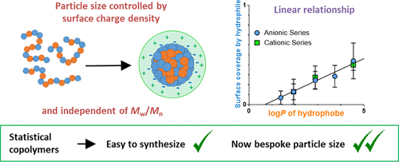
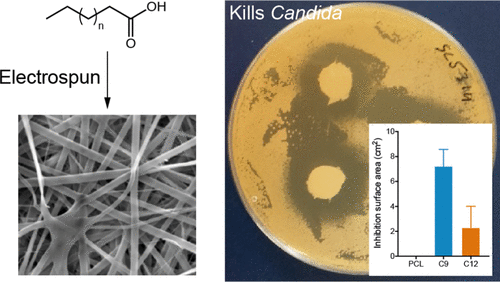
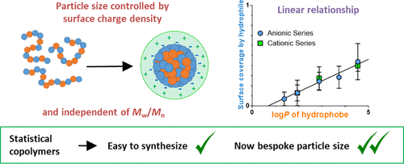
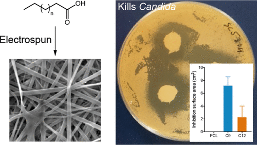
 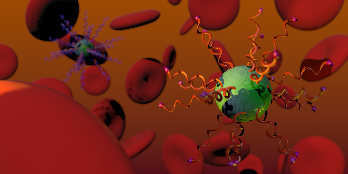
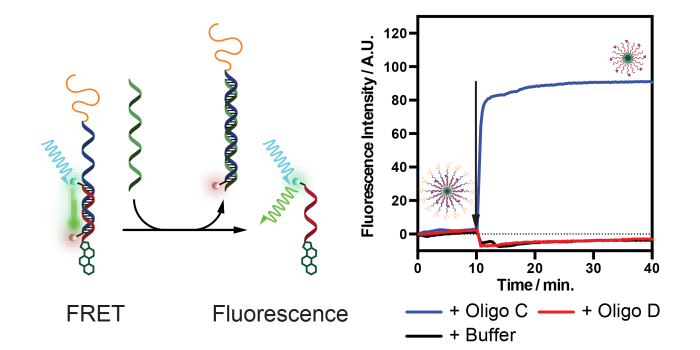
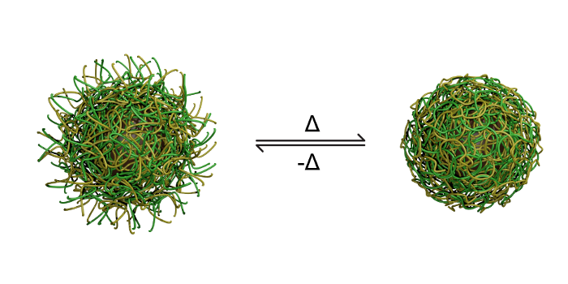
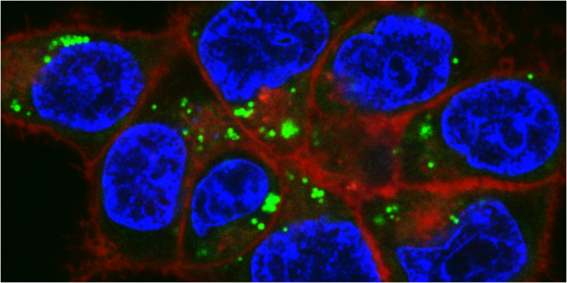
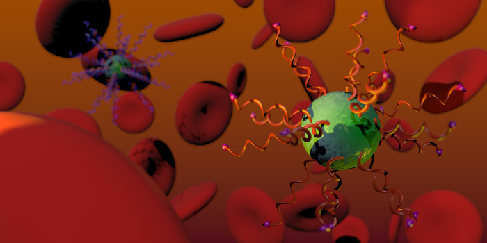
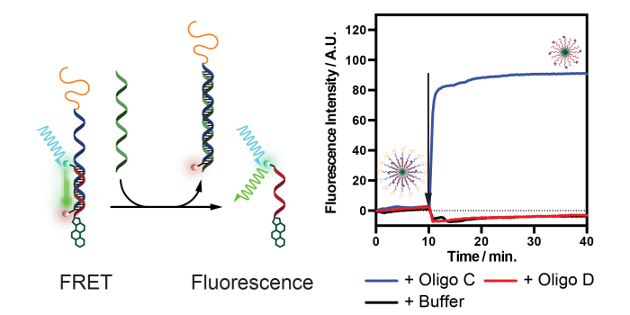
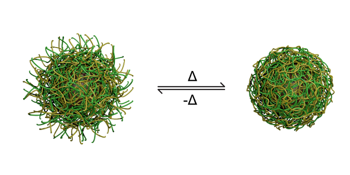
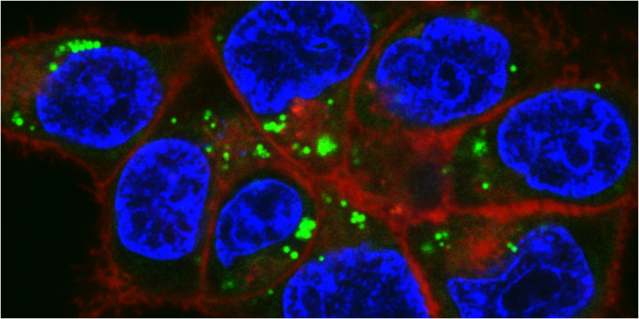